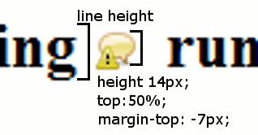

So what are the benefits of using sprites?
-
Modern internet connections are pretty fast, which means that page speed bottlenecks are not often in the size of the download, instead on the number of requests made to the server. Using sprite files can drastically reduce the number of requests made.
As a real world example, in a recent project I have reduced the number of image files by about 60 using the techniques below.
-
You can also include all your structural images in a single sprite file and cache it (save it on the users machine). By doing this you exponentially relieve the load on the server with more page views.
The following table demonstrates this with a sprite image file with 30 images inside it:
|
Number of unique visitors
|
Number of page views
|
Number of server requests with individual files and no caching
|
Number of server requests when using the cached sprite file
|
|
2
|
1
|
60
|
2
|
|
2
|
4
|
240
|
2
|
|
2
|
8
|
480
|
2
|
|
4
|
1
|
120
|
4
|
|
4
|
4
|
480
|
4
|
|
4
|
8
|
960
|
4
|
You should be able to see the benefits, even with 4 unique visitors. Imagine the gains made when a site has several thousand unique visitors every day.
-
Management of small images is easier. I tend to start a sprites psd to include all the images in. This means that when there is a change to any of the items you don't have to sift through a large number of files. You can also apply changes across a set of images for older browsers or other style sheets (eg. high visibility, black and white print)
When and Where to use sprites
When you are faced with a website design look for images which:
-
Are found in the main structure of the page
-
Are small icons or motifs
-
Very rarely (if ever) change
-
Button backgrounds
-
Navigation backgrounds (ie tabs, arrows)
When you can't/shouldn't use sprites
-
Regularly changing content
-
Content managed images
-
Repeating backgrounds (it is possible but with many limitations)
Time to sprite - 3 Techniques
As far as I can see, there are three distinct types of potential sprite usage within pages.
All of these examples make use of the following sprite image:
A common scenario where an image is placed within a block element with a fixed width and height, and either floated or positioned absolutely within the page.
#spriteBlock {
background: url(sprites.gif) no-repeat -60px -52px;
display: block;
float: left;
height: 62px;
margin: 0 15px 15px 0;
text-align:left;
text-indent: -9999px;
width: 62px;
}
Sliding doors
The sliding doors technique uses two images to fill a component which can expand and contract. One fills the left edge and the other fills the rest of an element but slides behind. I won't go into the details of this, but if you want more background information, then here is a
good article explaining sliding doors. Instead, I want to focus on how I would do this differently to utilise sprites better.
Unless you have sprites with semi transparent areas (there are still ways which we won't cover here) you can include both the left and the right hand image in the same file. You should still find that the technique works with these minor modifications. The following is an example of a faux button with styles for hover and focus.
This uses the following markup:
<a href="link.htm" class="button"><span>button text</span></a>
Here's the css:
a.button {
background: url(sprites.gif) no-repeat left -125px;
cursor: pointer;
height: 32px;
float: left;
line-height: 32px;
outline: none;
margin-right: 9px;
padding: 0;
position: relative;
text-decoration: none;
}
a.button:hover,
a.button:focus { background-position: left -175px; }
a.button:active { background-position: left -125px; }
a.button span {
background: url(sprites.gif) no-repeat right -125px;
color: white;
cursor: pointer;
float: left;
left: 9px;
line-height: 32px;
margin: 0 !important;
padding: 0 10px 0 1px;
position: relative;
}
The key differences shown in this example are:
-
We specify the same sprite image for the parent and child wrappers.
-
We use the left property instead of margins or padding to position the inner span. This exposes the right hand edge of the image over the bounds of the parent image so that you don't see it underneath.
-
We specify a right margin to make sure the width of the parent element covers the child element.
Within the flow of text
The final usage has for me been the most contentious and painstaking to find a solution to. Inserting sprites in line and within the flow of text. I have come across various solutions to this, but not stumbled across any which are completely accessible and can be used when CSS and JavaScript have both been turned off in the browser.
My solution works by placing an absolutely positioned span within a relatively positioned span. This seemed to be the obvious and simple way forward. What I didn't bargain for was the problems I would face getting the sprite to align consistently at the appropriate height across all the browsers.

Lets look at some markup which would serve as the text representation of the image above:
<span class="sprite"> <span>!</span></span>
The text representation of the image is wrapped within two span tags.
.sprite {
margin: 0;
padding-left: 15px;
position: relative;
vertical-align: top;
zoom: 1;
}
The outer span tag is used to allow the sprite to continue where the original was placed in the flow of the text. You can't apply width to an inline element, and not all the browsers support the inline-block display type, so we use left padding to give the span the width it needs to cover the size of the image.
The vertical align means that the top of the parent element is positioned at the top of the line of text. This means that when we use the top:50% on the child element, it is relative to the top of the line. Depending on the context this sprite is in, you may need to use one of the other vertical-align options to achieve the most consistent rendering across all the browsers.
The zoom declaration tells internet explorer to mark the element with the hasLayout property allowing us to use the top percentage on the child span element.
An important thing to note here is that it needs the within the parent tag to stop the line-height collapsing.
.sprite span {
background: url(sprites.gif) no-repeat -2px -2px;
display: block;
height: 14px;
left: 0;
margin: -5px 0;
padding: 0;
position: absolute;
text-align: left;
text-indent: -9999px;
top: 50%;
width: 16px;
zoom: 1;
}
The inner span element styles should be pretty explanatory.
Specify the height of the image (not the height of the line). We then use a familiar technique usually used to align elements horizontally. This time we use it to align vertically. Set the top style to 50% and the top margin to a negative amount (usually half of the height).
Again the zoom declaration tells ie to mark the element with the hasLayout property allowing us to use the top percentage.
Finally the text-indent hides the original text placed within the child element.
Considerations and things to watch out for
-
If you are using this with an anchor tag, then you will need to override the default outline on focus. Firefox will show it going off the page to the left.
Conclusion
As you learn to implement these techniques you will continually find new ways of reducing the load time of your website pages. They can take a little tweaking but it's worth the gains in the end.
About the Author